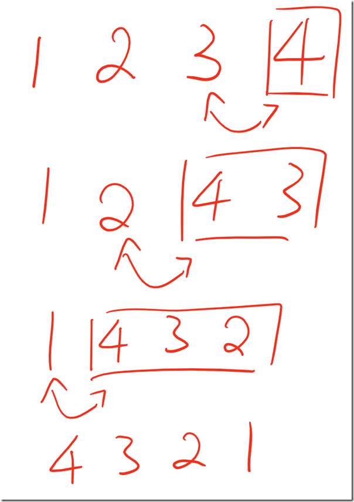

© 2019 《算法（第四版）》C# 题解 | Provided By 沈星繁
搜索解答
目前已完成到 2.5
1.3.30
上次更新：2019-02-11
题目
1.3.30
编写一个函数，接受一条链表的首结点作为参数，
（破坏性地）将链表反转并返回链表的首结点。
解答
书中给出了代码，这里说一下递归的实现。
如果说一个链表除了第一个结点剩下的都已经反转了，那么我们就只要把该结点插入到最后就行了（也就是原先的第二个结点之后）。
像这样：

代码
using System;
using Generics;
namespace _1._3._30
{
/*
* 1.3.30
*
* 编写一个函数，接受一条链表的首结点作为参数，
* （破坏性地）将链表反转并返回链表的首结点。
*
*/
class Program
{
static void Main(string[] args)
{
Node<string> first = new Node<string>();
Node<string> second = new Node<string>();
Node<string> third = new Node<string>();
Node<string> fourth = new Node<string>();
first.item = "first";
second.item = "second";
third.item = "third";
fourth.item = "fourth";
first.next = second;
second.next = third;
third.next = fourth;
fourth.next = null;
Node<string> current = first;
while (current != null)
{
Console.Write(current.item + " ");
current = current.next;
}
first = Reverse(first);
Console.WriteLine();
current = first;
while (current != null)
{
Console.Write(current.item + " ");
current = current.next;
}
}
//使用书中的递归方式实现
static Node<Item> Reverse<Item>(Node<Item> first)
{
if (first == null)
return null;
if (first.next == null)
return first;
Node<Item> second = first.next;
Node<Item> rest = Reverse(second);
second.next = first;
first.next = null;
return rest;
}
}
}